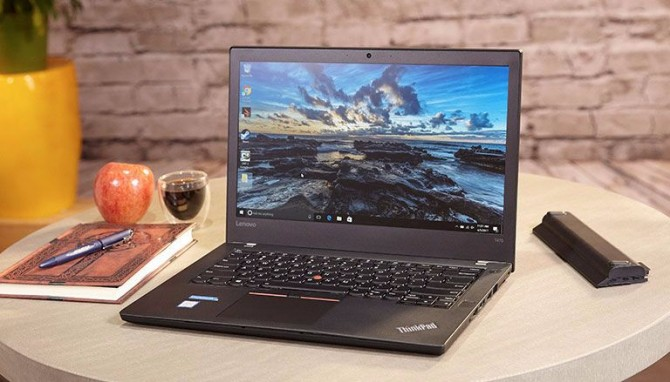
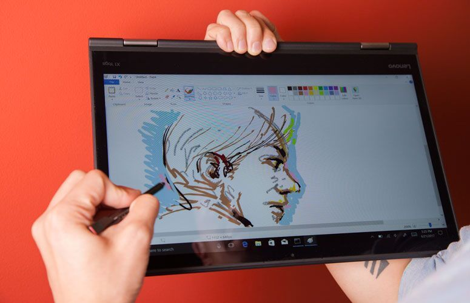
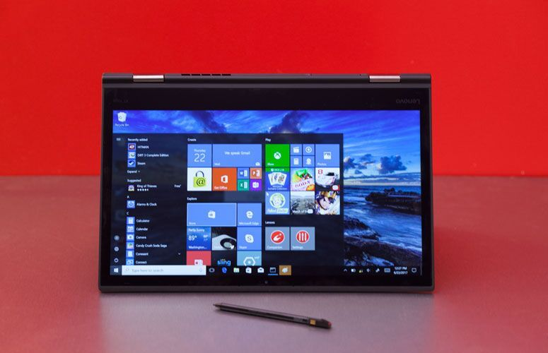
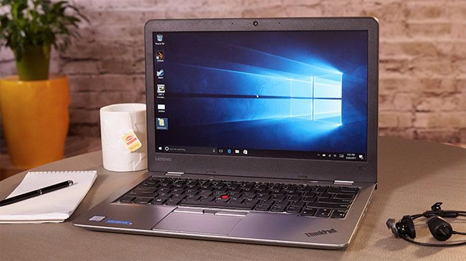
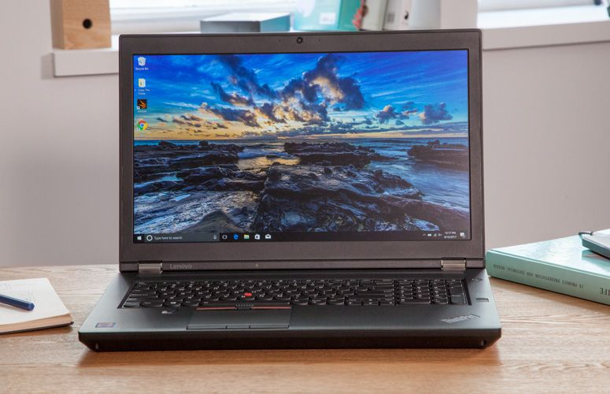

Why thinkpad?
For many business users and corporate IT departments, nothing but a Lenovo ThinkPad laptop will do. Whether it's their strong build quality, industry-leading keyboards, hyper accurate pointing sticks, or simple black aesthetic, the ThinkPad line has a number of mainstays that Lenovo fans won't do without.
Even if you've already got your heart and your budget committed to a ThinkPad, you've got a lot of choices. Lenovo currently sells over 20 ThinkPad models across 9 different lines. The laptops all have the same basic aesthetic, but vary greatly when it comes to size, price, screen quality, performance and battery life. Some even have snappier keyboards than others.
Best General-Purpose ThinkPad
The ThinkPad T470 is our favorite, general-purpose ThinkPad because it combines extremely-long battery life (17 hours) with a deep keyboard, solid performance and an optional 1080p display. At 3.5 to 3.9 pounds, it's not the lightest laptop around, but it's more than svelte enough to carry. A starting price around $873 makes it a decent value in comparison to more expensive models like the ThinkPad T470s and X1 Carbon.
Best 2-in-1 Options
Lenovo makes several different ThinkPad models which have the brand's Yoga, bend-back functionality. Of these, the 14-inch ThinkPad X1 Yoga stands head and shoulders above the rest, because it combines light weight with solid battery life
Best Keyboards
Even the worst ThinkPad keyboard is pretty good, but they aren't all created equal, as some have more travel and a better feel than others. The ThinkPad T470 has the best combination of deep travel and strong feedback of any current-generation Lenovo laptop. The productivity powerhouse requires a snappy 70 grams of actuation force to press down, far about the 55 to 60 grams we see on most laptops. It also has a full 2mm of travel to help you avoid "bottoming out" or hitting the base with a painful amount of force.

Best Screen
Many of Lenovo's ThinkPads are available with different screen options, allowing you to choose a resolution or decide between touch and non-touch panels. We strongly recommend that you get your ThinkPad with a minimum resolution of 1920 x 1080 and eschew the ugly 1366 x 768 and 1600 x 900 panels that come on a few of the base configs. To get the best battery life, eschew a touch screen if you're buying a traditional clamshell laptop rather than a 2-in-1.
Best Value
Though not as affordable as it was in 2016, the ThinkPad 13 offers the most bang for the buck, starting at $549 and going for just over $1,000 with our recommended config (1080p screen, Core i5, 256GB SSD). Lenovo's small-business focsued ThinkPad E470 and E570 start at just $539, with very-basic components but you can configure them with SSDs, 1080p displays and Core i5 CPUs for a little over $200 more.
Most Powerful
Most mainstream ThinkPads come with a choice of low-voltage, dual-core Intel Core i3, Core i5 or Core i7 CPUs. If you want a lot more speed for tasks like 3D modeling, CAD or engineering work, get one of the P series laptops. If you want the most powerful mobile workstation around and size is no object, get the 17-inch ThinkPad P71, which is available with an Intel Xeon E3-1535M CPU and Nvidia Quadro P5000 graphics. The P51 offers the same Xeon CPU but a slightly-slower Nvidia Quadro M1200 GPU. There's also the ligthweight ThinkPad P51s, which weighs just 4.3 pounds but only sports a dual-core, Core i7-7600U CPU and Nvidia Quadro M520 graphics.
